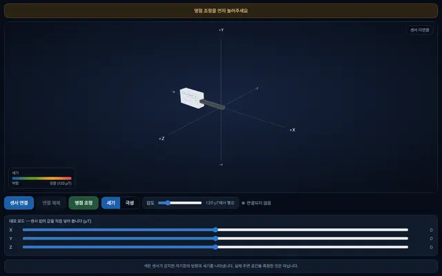
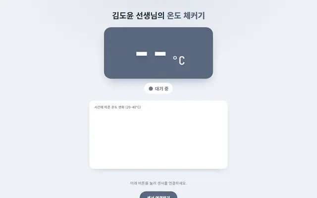

센서수업
센서로 직접 재는 과학 탐구
무선 센서를 브라우저에 바로 연결해 실험하고 기록해요.
버니어 센서
파스코 센서
1학년 · 물질의 상태 변화
로르산 냉각 곡선 탐구
버니어 온도 센서로 로르산이 식는 과정을 자동 측정해 냉각 곡선을 그리고 어는점을 찾아요. 모둠 대표가 측정한 데이터를 6자리 코드로 나눠 받아 각자 분석하고 AI 피드백까지 받아요.
1학년버니어
들어가기 →

2학년 · 자기장
눈으로 보는 자기장
파스코 무선 3축 자기장 센서가 감지한 자기장의 세기와 방향을 3D 색 구름으로 보여 줘요. 센서 없이도 데모 모드로 값을 넣어 볼 수 있어요.
2학년파스코
들어가기 →
3학년 · 운동과 에너지
등속 운동하는 물체의 운동 그래프
파스코 초음파 운동 센서로 장난감 자동차의 운동을 재어 시간–이동 거리·시간–속력 그래프를 만들고, 예상 → 측정 → 분석 → AI 피드백 → 보고서로 등속 운동을 탐구해요.
3학년파스코
들어가기 →
전학년 · 지능형 과학실 ON 공동탐구
태양광 체인지메이커 탐구 도우미
버니어 센서 3종(에너지·일사량·표면 온도)으로 일사량·각도·온도에 따른 태양 전지 발전량을 재고, 가장 효율적인 조건을 찾아 우리 학교에 제안하는 동아리 공동탐구예요.
전학년버니어
들어가기 →

전학년 · 센서 점검
온도 체커기
버니어 온도 센서를 연결해 제대로 작동하는지 확인하고, 시간에 따른 온도 변화를 실시간 그래프로 바로 살펴봐요.
전학년버니어
들어가기 →